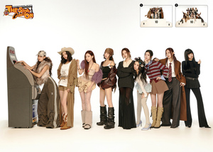

About
TWICE is a South Korean girl group formed by JYP Entertainment through the 2015 reality show, SIXTEEN.
It is composed of nine members: Nayeon, Jeongyeon, Momo, Sana, Jihyo, Mina, Dahyun, Chaeyoung and Tzuyu.
The group debuted on October 20, 2015 with the mini album, THE STORY BEGINS.
